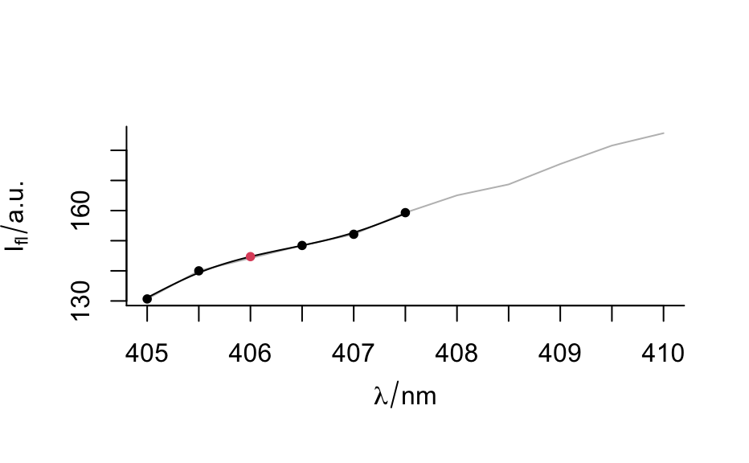

Replace NAs in the spectra matrix by interpolation. With
less than 4 points available linear interpolation of the 2 neighbour points is used. For larger numbers of
neighbour points, smoothing interpolation is performed by
smooth.spline.
spc.NA.approx( spc, neighbours = 1, w = rep(1, 2 * neighbours), df = 1 + .Machine$double.eps, spar = NULL, debuglevel = hy.getOption("debuglevel") ) spc.NA.linapprox(...)
| spc | hyperSpec object with spectra matrix containing |
|---|---|
| neighbours | how many neighbour data points should be used to fit the line |
| w, df, spar | see |
| debuglevel | see |
| ... | ignored |
hyperSpec object
The function has been renamed from spc.NA.linapprox to spc.NA.approx
Claudia Beleites
fluNA <- hyperSpec:::fluNA spc.NA.approx (fluNA [,, min ~ 410], debuglevel = 1)#> Warning: Spectra containing only NAs found. They will not be approximated.#> hyperSpec object #> 6 spectra #> 3 data columns #> 11 data points / spectrum #> wavelength: lambda/nm [numeric] 405.0 405.5 ... 410 #> data: (6 rows x 3 columns) #> 1. spc: I[fl]/"a.u." [matrix, array11] 27.15 NA ... 281.8287 + NA #> 2. filename: filename [character] rawdata/flu1.txt rawdata/flu2.txt ... rawdata/flu6.txt #> 3. c: c / (mg / l) [numeric] 0.05 0.10 ... 0.3spc.NA.approx (fluNA [1,, min ~ 410], debuglevel = 2)#> hyperSpec object #> 1 spectra #> 3 data columns #> 11 data points / spectrum #> wavelength: lambda/nm [numeric] 405.0 405.5 ... 410 #> data: (1 rows x 3 columns) #> 1. spc: I[fl]/"a.u." [matrix, array11] 27.15000 32.34467 ... 44.25133 #> 2. filename: filename [character] rawdata/flu1.txt #> 3. c: c / (mg / l) [numeric] 0.05spc.NA.approx (fluNA [4,, min ~ 410], neighbours = 3, df = 4, debuglevel = 2)#> hyperSpec object #> 1 spectra #> 3 data columns #> 11 data points / spectrum #> wavelength: lambda/nm [numeric] 405.0 405.5 ... 410 #> data: (1 rows x 3 columns) #> 1. spc: I[fl]/"a.u." [matrix, array11] 130.6637 139.9983 ... 185.6923 #> 2. filename: filename [character] rawdata/flu4.txt #> 3. c: c / (mg / l) [numeric] 0.2